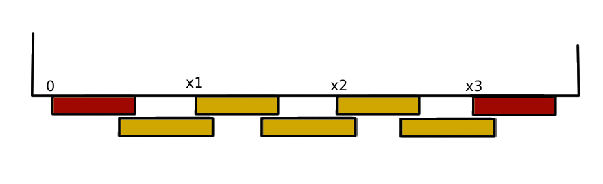

Dette er en kalulator for stående kledning. Fest underliggere ved hjørner, vinduer, dører og den slags først. Tallene du får over viser avstand fra venstre side av venstre underligger (denne må være på plass allerede) til venstre side av underliggerene du skal feste på veggen.
Overligger: ytterste bord
Underligger: innerste bord
Lengde: avstand fra venstre side av første underligger til venstre side av siste underligger. (Begge disse må være festet allerede)
Min omlegg: minste overlapp mellom overligger og underligger
Eksempel:
Appen hjelper ikke med å plassere de røde underliggerene.
Fest disse først.
Appen gir avstand fra der det står 0, til neste underliggere (x1, x2, ...).
